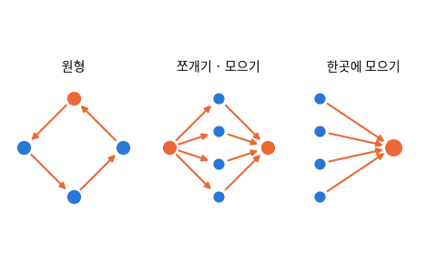

IBM (Altman et al., NeurIPS 2023). 사람 · 회사 · 은행이 있는 가상 세계를 시뮬레이션한 합성 거래 5,078,345건, 세탁 표시 포함 (Kaggle 원본, 여기서는 Hugging Face 사본으로 로그인 없이 받는다)

| Timestamp | From Bank | Account | To Bank | Account.1 | Amount Received | Receiving Currency | Amount Paid | Payment Currency | Payment Format | Is Laundering |
|---|---|---|---|---|---|---|---|---|---|---|
| 2022-09-06 11:30:00 | 18,196 | 803625250 | 19,723 | 80397E700 | 17,221.1 | Yuan | 17,221.1 | Yuan | Cheque | 0 |
| 2022-09-04 06:47:00 | 211 | 80A722860 | 28,416 | 80A6BA170 | 0.01 | Australian Dollar | 0.01 | Australian Dollar | Wire | 0 |
| 2022-09-08 15:22:00 | 24,144 | 80258F390 | 1655 | 80DE48C90 | 1,446.9 | Euro | 1,446.9 | Euro | Credit Card | 0 |
| 2022-09-08 04:37:00 | 1 | 80D4327D0 | 146,265 | 81322BCE0 | 33.29 | US Dollar | 33.29 | US Dollar | ACH | 0 |
| 2022-09-07 15:55:00 | 29,467 | 8039B33D0 | 210,261 | 80457A8D0 | 37,731.6 | Yen | 37,731.6 | Yen | Cheque | 0 |
| 2022-09-07 07:17:00 | 70 | 100428660 | 7478 | 80B38ED00 | 14,199.8 | US Dollar | 14,199.8 | US Dollar | Cheque | 0 |
| 열 | 종류 | 빈칸 | 고유값 수 | 범위 · 대표값 |
|---|---|---|---|---|
| Timestamp | 날짜 | 0 | 15,018 | 2022-09-01 00:00:00 ~ 2022-09-18 16:18:00 |
| From Bank | 숫자 | 0 | 30,470 | 1 ~ 356,303 (평균 45,730.6) |
| Account | 글자 · 범주 | 0 | 496,995 | 가장 흔한 값: 100428660 (3.3%) |
| To Bank | 숫자 | 0 | 15,811 | 1 ~ 356,294 (평균 65,744.6) |
| Account.1 | 글자 · 범주 | 0 | 420,636 | 가장 흔한 값: 100428660 (0.0%) |
| Amount Received | 숫자 | 0 | 915,161 | 0.000001 ~ 1,046,302,363,293.5 (평균 5,988,726.1) |
| Receiving Currency | 글자 · 범주 | 0 | 15 | 가장 흔한 값: US Dollar (37.0%) |
| Amount Paid | 숫자 | 0 | 923,873 | 0.000001 ~ 1,046,302,363,293.5 (평균 4,509,273.4) |
| Payment Currency | 글자 · 범주 | 0 | 15 | 가장 흔한 값: US Dollar (37.3%) |
| Payment Format | 글자 · 범주 | 0 | 7 | 가장 흔한 값: Cheque (36.7%) |
| Is Laundering | 숫자 | 0 | 2 | 0 ~ 1 (평균 0.001) |
ACH (자동 이체) 에서 가장 높다
처음 열흘 남짓에 몰려 있고 뒤로 갈수록 적다: 시간 순서로 나누면 시험 기간의 세탁 비율이 달라진다
| ① 한 행 | 거래 한 건 (또는 계좌 하나) |
| ② 입력 X | 시각 · 보낸/받는 은행 · 계좌 · 금액 · 통화 · 결제 형식 |
| ③ 출력 y | 세탁인가 (Is Laundering) |
| ④ 평가지표 | 정밀도 · 재현율 |
| ⑤ 기준선 | 전부 '정상' |
문제를 정할 때 처음 채워 보는 칸들입니다. 여기서 끝이 아니라, 시험 데이터를 어떻게 나눌지 · 틀렸을 때 손해가 얼마인지 · 예측 시점에 정말 알 수 있는 값인지 같은 칸을 더 붙일수록 좋은 문제가 됩니다.
always normal accuracy 99.898% precision 0.0% recall 0.0% rule: ACH accuracy 88.244% precision 0.7% recall 86.6%
누가, 왜, 어떻게 만든 데이터인지 직접 확인해 보세요.
인턴 · 산학협력 · 프로젝트 주제를 고를 때 참고하세요 (일반적인 예시).